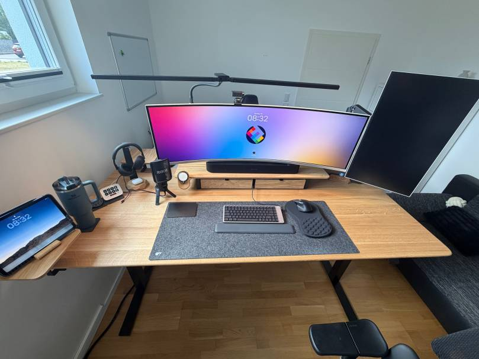
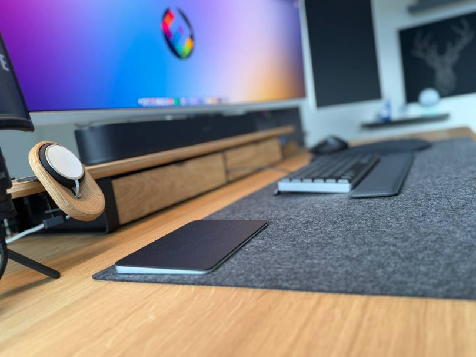
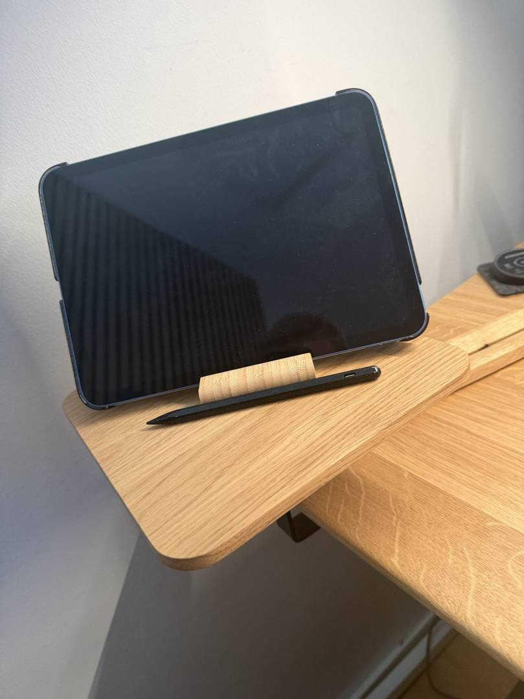
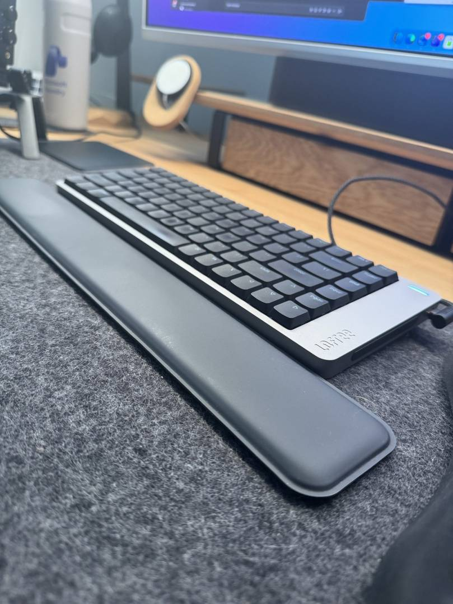
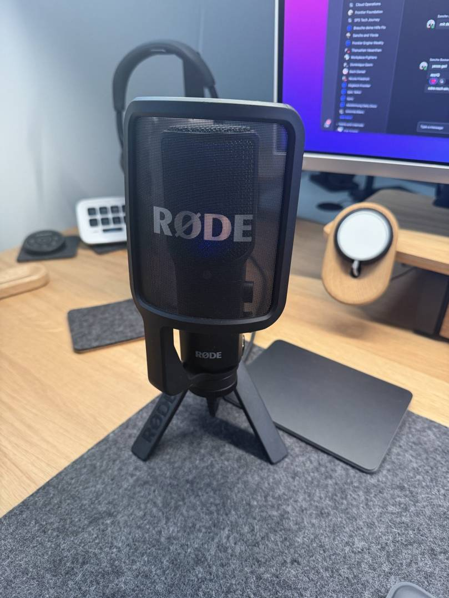
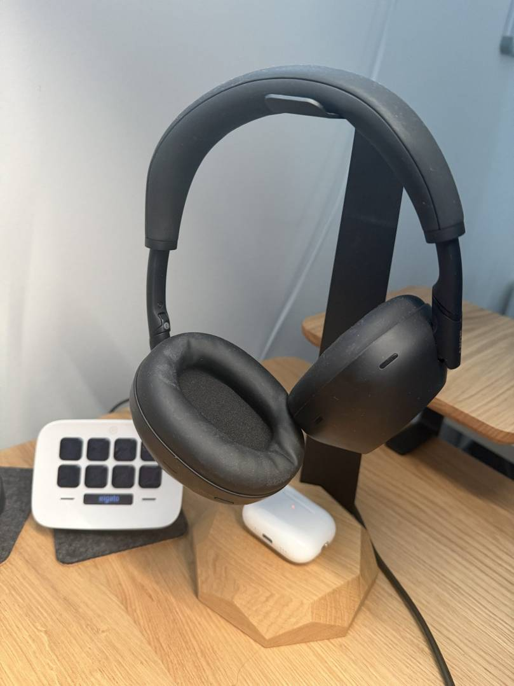
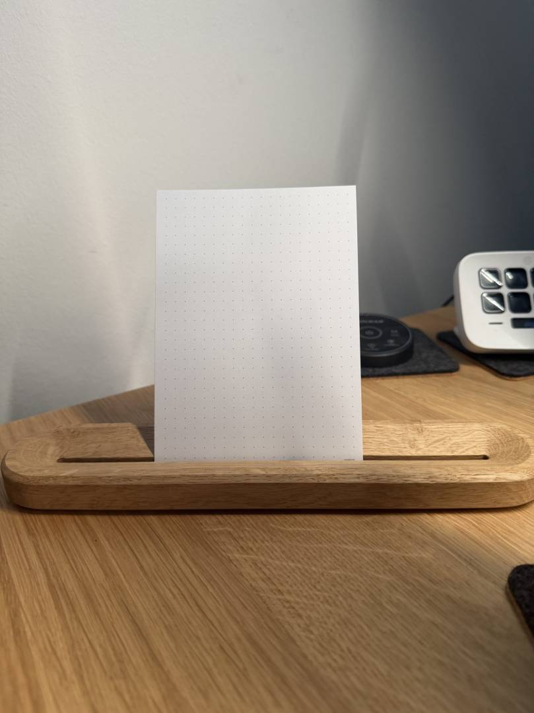

Topic of this page: Desk Setup 2026: My Complete Productive Workspace
After my post about the Oakywood Standing Desk Pro, many of you asked what else is on my desk. This is my complete desk setup 2026: the hardware I use every day, why I chose it and what I would not buy again.
This is not a list of products that look good in a photo. My desk is where I write, code, record videos, join calls and prepare community sessions. Every item must remove friction from that work. I will also explain where I would start if I had to build the setup again with a smaller budget.
Sponsored-product disclosure: Oakywood provided the Standing Desk Pro and the Oakywood accessories shown in this article free of charge as part of a sponsored collaboration. I did not pay for these products. Oakywood did not approve or edit my verdicts, and all opinions and trade-offs are my own. I bought every non-Oakywood product in this article myself.

My Desk Setup 2026 at a Glance
Here is the short version before I explain the decisions behind it.
| Category | What I use | My verdict |
|---|---|---|
| Desk | Oakywood Standing Desk Pro — sponsored product, provided free of charge | The foundation I would buy first |
| Main display | Philips Evnia 49M2C8900 QD-OLED | Replaces two displays without a centre bezel |
| Second display | Portrait monitor | Best for logs, documentation and long chats |
| Computer | MacBook Pro and iPad | Mac for work, iPad for notes and reading |
| Keyboard | Lofree Flow, German layout | Mechanical feedback without a tall keyboard |
| Mouse | Logitech MX Master 4 | My favourite productivity mouse |
| Microphone | RØDE NT-USB+ | The audio upgrade people notice immediately |
| Mobile audio | AirPods Pro 3 | Easy choice for calls and travel |
| Focus headphones | Sony WH-1000XM6 | Comfortable noise cancelling for long sessions |
| Shortcut control | Elgato Stream Deck, white | Useful once repeated actions become annoying |
| Task planning | Oakywood To-Do Stand — sponsored product, provided free of charge | Keeps the next task visible without another screen |
| Lighting | Govee Flow Plus and two floor lamps | Better for my eyes and my camera image |
| Room climate | Philips Air Performer 7000 | Fan and air purifier in one device |
The important point is that I did not buy all of this at once. The setup grew over several years. I replaced the parts that caused the most friction first.
What Is the Foundation of My Desk Setup 2026?
The base is still the Oakywood Standing Desk Pro with a walnut top. After several months, my conclusion from the original review has not changed. I stand more because changing the height is effortless, and the cable management makes it easier to keep the surface clean.
That sounds simple, but it matters. A premium keyboard cannot fix a desk that is at the wrong height. If I had to rebuild this setup from zero, I would first spend money on the desk, chair and display position. Those are the parts that affect my body for hours every day.
I will not repeat the complete desk review here. You can read my hands-on Oakywood Standing Desk Pro review for the details about the surface, height adjustment and cable tray.

Which Displays Do I Use?
The biggest quality-of-life upgrade is the Philips Evnia 49M2C8900. It is a 48.9-inch curved QD-OLED display with a 32:9 format and a resolution of 5120 × 1440.
For me, the benefit is not gaming. It is window management. I can keep an editor, browser and documentation visible at the same time without a bezel in the centre. USB-C also reduces the number of cables between the display and my MacBook Pro.
There is a trade-off. A 49-inch display needs a deep desk and some time to find the right scaling. Screen sharing can also be awkward because most people do not watch on a 32:9 display. I normally share one application window instead of the complete screen.
Next to the ultrawide display, I use a smaller monitor in portrait mode. It is reserved for long content: Teams, logs, documentation and terminal output. A vertical display sounds unnecessary until you work through a long log file or review a document without scrolling every few seconds.
The MacBook Pro is the main computer. An iPad sits next to the keyboard for handwritten meeting notes and reading PDFs. This keeps the large display available for the task I am actively working on.

Hint: If your budget is limited, buy one good display and position it correctly before adding a second one. More screen space only helps when the layout supports your actual workflow.
Which Keyboard and Mouse Do I Use?
My daily keyboard is the Lofree Flow with a German layout. It gives me the feedback of a mechanical keyboard but keeps the low profile I prefer. It is also quiet enough for calls. Since I write a lot, this small difference in typing feel matters every day.
I still keep an Apple Magic Keyboard as a backup. I use it when I want an almost silent keyboard or when I need something flat and familiar. The Lofree wins on most days, but the Magic Keyboard remains useful.
For the mouse, I use the Logitech MX Master 4. The ergonomic shape, the free-spinning scroll wheel, customisable haptic feedback and application-specific actions in Logi Options+ fit how I work.
My practical use is less dramatic. I map the side buttons differently for the browser, editing tools and presentations. The best shortcut is the one that removes a small, repeated movement hundreds of times.

How Do I Handle Calls, Recordings and Deep Work?
For calls, recordings and community sessions, I use the RØDE NT-USB+. It is a USB condenser microphone with a cardioid pickup pattern, which helps it focus on the voice in front of the microphone.

The reason I recommend a dedicated microphone is simple: people forgive an average camera image much faster than bad audio. The NT-USB+ connects directly through USB, so I do not need a separate audio interface. I keep it close to my mouth and lower the input gain rather than placing it far away and increasing the gain.
For headphones, I use three different options because they solve different problems:
- AirPods Pro 3 are my everyday earbuds for travel, walking meetings and quick focus sessions.
- Sony WH-1000XM6 are my choice for long desk sessions. They are lighter on my head than the AirPods Max, provide strong noise cancelling and last through multiple days of my normal use.
- AirPods Max are the expensive product I would skip. I wanted to like them, but they are too heavy for long sessions, and I repeatedly experienced Bluetooth problems where one side did not connect correctly. That is my experience, not a general statement about every AirPods Max unit.

The lesson for my desk setup 2026 is that ecosystem integration is not enough. Comfort and reliability matter more when I wear a device for several hours.
The Elgato Stream Deck in white is the small device that removes many repeated clicks. Its 15 LCD keys can trigger shortcuts, applications and multi-step actions.
My most-used keys are simple:
- Mute or unmute the microphone.
- Turn the camera on or off.
- Switch recording scenes.
- Open the applications I need for a presentation.
- Start a focus workflow and close distracting applications.
I would not buy a Stream Deck before fixing the basics. It becomes valuable when you already know which actions you repeat. Until then, normal keyboard shortcuts are enough.
The wooden accessory in the photo is the Oakywood To-Do Stand. I use it to keep one handwritten task card directly in my line of sight instead of leaving another list hidden in an app or flat on the desk.
What I like about it is the deliberate limitation. It does not try to replace my digital task system. It gives the single next task a physical place, so I can return to it after a call or interruption without opening another screen. It follows the same rule as the Stream Deck: frequently used information and actions should be available without breaking the current workflow.

The other small helper is a Stanley Quencher. It is not a technical product, but the large bottle means I refill it less often and drink more during the day. Sometimes a simple object improves the routine more than another smart device.
How Do I Set Up Lighting and Room Climate?
Behind the main monitor, I use Govee Flow Plus light bars. Two Govee floor lamps provide indirect light in the room. I use warm white light for focused work and a little colour for evening recordings.
Indirect light is more comfortable for me than a bright ceiling lamp, especially during long sessions. It also gives the camera image more depth without turning the office into a studio.
For room climate, I use the Philips Air Performer 7000. It combines a fan and an air purifier, so I do not need two separate devices. In summer, the fan is the important part. During the rest of the year, I usually run it quietly as an air purifier.
Note: Lighting and air quality are easy to ignore because they do not appear in a benchmark. I still notice both more often than a small performance difference between two computers.
What Would I Buy First on a Smaller Budget?
If I had to rebuild my desk setup 2026 with less money, I would use this order:
- Desk, chair and display height. Fix posture and comfort first.
- One reliable display. Choose the correct size for the depth of the desk.
- A keyboard and mouse that fit your hands. Expensive does not automatically mean comfortable.
- A dedicated microphone. This is especially important if you spend much of the day in calls.
- Good lighting. Start with one indirect light before building a complete smart-light system.
- Headphones for your real use case. Travel, calls and deep work may require different compromises.
- Automation tools such as a Stream Deck. Add them only after you can name the repeated actions they will replace.
This order is more useful than copying my exact product list. Your desk depth, operating system, room and daily tasks may lead to different products.
What Would I Buy Again—and What Would I Skip?
I would buy the desk, ultrawide display, Lofree keyboard, MX Master 4, RØDE microphone and Sony headphones again. They solve problems I face every day.
I would skip the AirPods Max for my workflow. They are not comfortable enough for long sessions, and my Bluetooth experience has been too unreliable. I would also delay the Stream Deck if I were still building the basic setup. It saves time, but only after the fundamentals are right.
A good workspace is not the one with the most products. It is the one where the tools disappear while you work.
Final Thoughts on My Desk Setup 2026
My desk setup 2026 grew from real work, not from a single shopping list. Some purchases stayed. Others did not. The most valuable upgrades are still the ones that improve comfort, audio and focus every day.
If you want to improve your own desk, start with the biggest source of friction. Do not buy everything at once. Change one part, use it for a few weeks and decide whether it really helped.
If you have questions about any device, write them in the comments. I would also like to know which single item has made the biggest difference to your workspace.
I hope this is a little help.
Stay healthy, Cheers Jannik